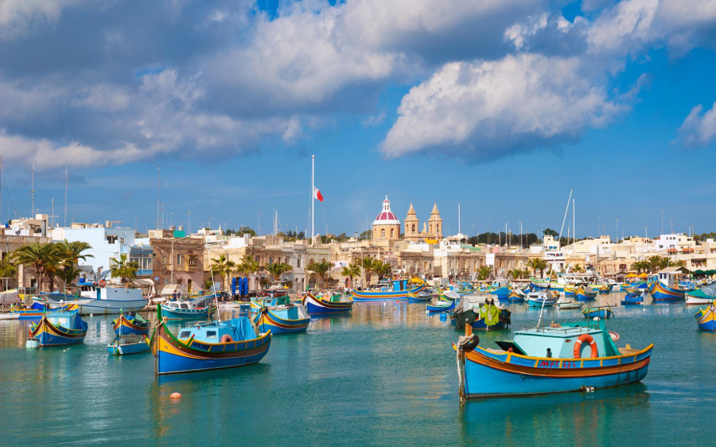
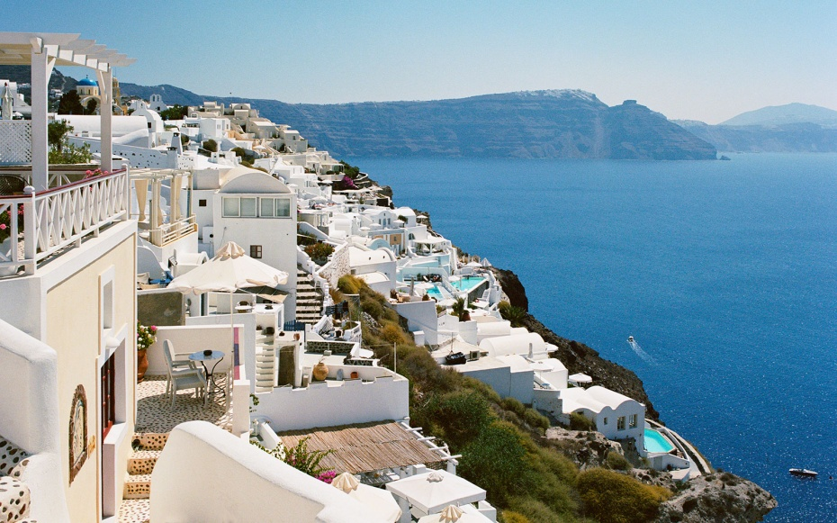
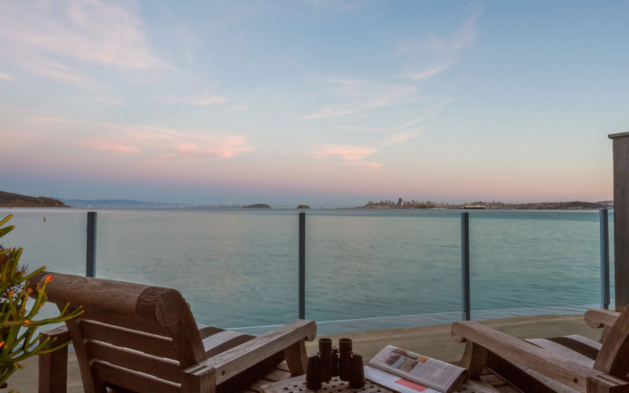

Traveler's diary
Time for Adventure
Featured Destinations
Curaçao
Sweden
Malaysia
St. Lucia
Articles
Top 10 Cities to visit
World's best islands

Trips of a lifetime

World's best hotels



Join our mailing list for the latest in travel news!
© Zalini 2015